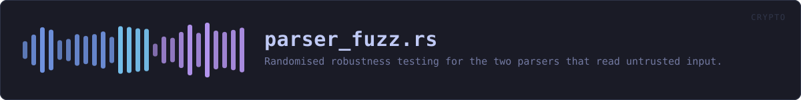

crates/veilvoice-crypto/tests/parser_fuzz.rs
veilvoice-crypto · 306 lines · read the source
Randomised robustness testing for the two parsers that read untrusted input.
What is being defended
container::Header::parse reads a file somebody sent you. lock::AppLock::parse reads the app-lock file, which is worse: it is parsed before anyone has authenticated anything, so it is the first bytes the program touches on a locked machine.
For a parser in a security tool the bar is not "usually returns the right answer". It is:
1. Never panic. A panic on hostile input is a denial of service, and in a panic = "abort" release profile it is the whole process. 2. Never hang. Every loop must be bounded by the input, not by a length field the input controls. 3. Never report success for something it did not fully understand. An Ok must come with offsets that are actually inside the buffer.
Why this and not cargo fuzz
cargo fuzz needs nightly and libFuzzer, which is a poor fit for a project that pins a stable toolchain and wants every check runnable by anyone who cloned it. This is a deterministic campaign instead: a seeded PRNG, so a failure is reproducible from its seed rather than being a story about a run nobody can repeat, and structure-aware mutation, so the bytes spend their time near the interesting boundaries rather than being rejected at the magic number.
It is not a substitute for a coverage-guided fuzzer and docs/AUDIT.md does not claim it is. It is the campaign that can actually be run on every commit, on every platform, by everybody.
Set VEILVOICE_FUZZ_ROUNDS to run it longer than the default.
WHAT THIS FILE CONTAINS
306 lines defining 12 functions (0 public), 1 type and 0 constants. Everything below is read out of the source, so it cannot disagree with the code.
The types it owns.
struct Rngline 41 — xorshift32.
WHAT CALLS WHAT
The functions this file defines, and the calls between them. An edge means the callee's name appears, called, inside the caller's body — a syntactic reading, not a type-resolved one.
The same graph as Mermaid source
%%{init: {"theme":"base","themeVariables":{"background":"#1a1b26","primaryColor":"#1f2335","primaryTextColor":"#c0caf5","primaryBorderColor":"#7aa2f7","secondaryColor":"#16161e","tertiaryColor":"#16161e","lineColor":"#737aa2","textColor":"#c0caf5","mainBkg":"#1f2335","nodeBorder":"#7aa2f7","clusterBkg":"#16161e","clusterBorder":"#2f3549","fontFamily":"ui-monospace, SFMono-Regular, Consolas, monospace","fontSize":"14px"}}}%%
flowchart TD
n_new["Rng::new<br/>line 44"]
n_next_u32["Rng::next_u32<br/>line 47"]
n_below["Rng::below<br/>line 53"]
n_byte["Rng::byte<br/>line 60"]
n_rounds["rounds<br/>line 65"]
n_mutate["mutate<br/>line 77"]
n_weak["weak<br/>line 151"]
n_cheap["cheap<br/>line 169"]
n_the_container_header_parser_survives_hostile_input["the_container_header_parser_s…<br/>line 174"]
n_the_app_lock_parser_survives_hostile_input["the_app_lock_parser_survives_…<br/>line 225"]
n_both_parsers_survive_pure_noise["both_parsers_survive_pure_noi…<br/>line 265"]
n_every_length_around_a_boundary_is_handled["every_length_around_a_boundar…<br/>line 285"]
n_below --> n_next_u32
n_both_parsers_survive_pure_noise --> n_cheap
n_both_parsers_survive_pure_noise --> n_new
n_both_parsers_survive_pure_noise --> n_rounds
n_byte --> n_next_u32
n_every_length_around_a_boundary_is_handled --> n_weak
n_the_app_lock_parser_survives_hostile_input --> n_cheap
n_the_app_lock_parser_survives_hostile_input --> n_mutate
n_the_app_lock_parser_survives_hostile_input --> n_new
n_the_app_lock_parser_survives_hostile_input --> n_rounds
n_the_app_lock_parser_survives_hostile_input --> n_weak
n_the_container_header_parser_survives_hostile_input --> n_cheap
n_the_container_header_parser_survives_hostile_input --> n_mutate
n_the_container_header_parser_survives_hostile_input --> n_new
n_the_container_header_parser_survives_hostile_input --> n_rounds
n_the_container_header_parser_survives_hostile_input --> n_weak
click n_new href "https://github.com/tilas01/veilvoice/blob/main/crates/veilvoice-crypto/tests/parser_fuzz.rs#L44" "open the source"
click n_next_u32 href "https://github.com/tilas01/veilvoice/blob/main/crates/veilvoice-crypto/tests/parser_fuzz.rs#L47" "open the source"
click n_below href "https://github.com/tilas01/veilvoice/blob/main/crates/veilvoice-crypto/tests/parser_fuzz.rs#L53" "open the source"
click n_byte href "https://github.com/tilas01/veilvoice/blob/main/crates/veilvoice-crypto/tests/parser_fuzz.rs#L60" "open the source"
click n_rounds href "https://github.com/tilas01/veilvoice/blob/main/crates/veilvoice-crypto/tests/parser_fuzz.rs#L65" "open the source"
click n_mutate href "https://github.com/tilas01/veilvoice/blob/main/crates/veilvoice-crypto/tests/parser_fuzz.rs#L77" "open the source"
click n_weak href "https://github.com/tilas01/veilvoice/blob/main/crates/veilvoice-crypto/tests/parser_fuzz.rs#L151" "open the source"
click n_cheap href "https://github.com/tilas01/veilvoice/blob/main/crates/veilvoice-crypto/tests/parser_fuzz.rs#L169" "open the source"
click n_the_container_header_parser_survives_hostile_input href "https://github.com/tilas01/veilvoice/blob/main/crates/veilvoice-crypto/tests/parser_fuzz.rs#L174" "open the source"
click n_the_app_lock_parser_survives_hostile_input href "https://github.com/tilas01/veilvoice/blob/main/crates/veilvoice-crypto/tests/parser_fuzz.rs#L225" "open the source"
click n_both_parsers_survive_pure_noise href "https://github.com/tilas01/veilvoice/blob/main/crates/veilvoice-crypto/tests/parser_fuzz.rs#L265" "open the source"
click n_every_length_around_a_boundary_is_handled href "https://github.com/tilas01/veilvoice/blob/main/crates/veilvoice-crypto/tests/parser_fuzz.rs#L285" "open the source"
classDef helper fill:#1f2335,stroke:#bb9af7,color:#c0caf5
class n_new,n_next_u32,n_below,n_byte,n_rounds,n_mutate,n_weak,n_cheap,n_the_container_header_parser_survives_hostile_input,n_the_app_lock_parser_survives_hostile_input,n_both_parsers_survive_pure_noise,n_every_length_around_a_boundary_is_handled helperThis site loads no third-party script, so it cannot run Mermaid; the diagram above is the same nodes and edges drawn by the generator instead. GitHub renders the source below directly.
ITEMS
| Item | Line | Documentation |
|---|---|---|
Rng struct | 41 | xorshift32. |
Rng::new fn | 44 | |
Rng::next_u32 fn | 47 | |
Rng::below fn | 53 | |
Rng::byte fn | 60 | |
rounds fn | 65 | |
mutate fn | 77 | Mutate seed_bytes in one of the ways that break parsers in practice. |
weak fn | 151 | |
cheap fn | 169 | Whether it is worth actually running the KDF for these parameters. |
the_container_header_parser_survives_hostile_input fn | 174 | |
the_app_lock_parser_survives_hostile_input fn | 225 | |
both_parsers_survive_pure_noise fn | 265 | Pure noise, with no valid seed to start from. |
every_length_around_a_boundary_is_handled fn | 285 | The lengths a parser gets wrong are the ones either side of a boundary, and a random campaign hits them only by luck. |